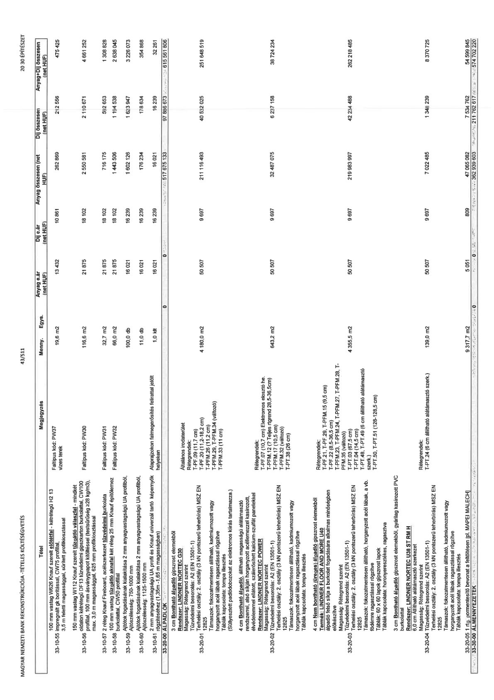

| Tétel | Megjegyzés | Menny. | Egys. | Anyag e.ár (net HUF) | Díj e.ár (net HUF) | Anyag összesen (net HUF) | Díj összesen (net HUF) | Anyag+Díj összesen (net HUF) |
|---|---|---|---|---|---|---|---|---|
| 33-10-55 100 mm vastag W626 Knauf szerelt előtétfal - kétrétegű H2 13 mm gipszkarton burkolattal, CW75 profillal, 3,5 m feletti magassággal, sűrített profilozással | Falitípus kód: PW37 vizes terek | 19,6 | m2 | 13 432 | 10 861 | 262 889 | 212 556 | 475 425 |
| 33-10-56 150 mm vastag W112 Knauf szerelt tűzgátló válaszfal - mindkét oldalon kétrétegű DF 13 tűzvédelmi gipszkarton burkolattal, CW100 profillal, 3,0 m feletti magassággal, sűrített profilozással (válaszfal összvastagság: 150 mm, tűzgátlási határérték EI 60, léghanggátlás >=28 kg/m3), | Falitípus kód: PW30 | 116,6 | m2 | 21 875 | 18 102 | 2 550 581 | 2 110 671 | 4 661 252 |
| 33-10-57 2 réteg Knauf Fireboard, ásványgyapot kőzetgyapot tűzvédelmi burkolat készítése acél teherhordó szerkezettel készült válaszfalra, mindkét oldalon kétrétegű 13 mm vastag Knauf Fireboard lapokkal és ásványgyapot kitöltéssel, CW50 profillal | Falitípus kód: PW31 | 32,7 | m2 | 21 875 | 18 102 | 716 175 | 592 653 | 1 308 828 |
| 33-10-58 100 mm vastag tűzvédelmi aknatfal két réteg 25 mm Knauf tűzvédelmi burkolattal, CW50 profillal | Falitípus kód: PW32 | 66,0 | m2 | 21 875 | 18 102 | 1 443 506 | 1 194 538 | 2 638 045 |
| 33-10-59 Ajtótok fogadásának kialakítása 2 mm anyagvastagságú UA profilból, Ajtószélesség: 750-1000 mm | NaN | 100,0 | db | 16 021 | 16 239 | 1 602 126 | 1 623 947 | 3 226 073 |
| 33-10-60 Ajtótok fogadásának kialakítása 2 mm anyagvastagságú UA profilból, Ajtószélesség: 1125-1500 mm | NaN | 11,0 | db | 16 021 | 16 239 | 176 234 | 178 634 | 354 868 |
| 33-10-61 2 mm anyagvastagságú UA profil és Knauf univerzális tartó kengyelek rögzítéséhez (1,35 m - 1,65 m magasságban) | Alaprajzokon falmegerősítés felirattal jelölt helyeken | 1,0 | klt | 16 021 | 16 239 | 16 021 | 16 239 | 32 261 |
| 33-20-00 ALPADLÓK | NaN | NaN | NaN | 0 | 0 | 517 675 133 | 97 886 673 | 615 561 806 |
| 33-20-01 4 cm Bontható álpadló gipszrost elemekből LINDNER NORTEC G30 Tűzvédelmi besorolás: A2 (EN 13501-1) Terhelési osztály: 2, 3 vagy 4 (3 kN pontszerű teherbírás) MSZ EN 12825 Támaszok: fokozatmentesen állítható, kadmiumozott vagy horganyzott acél lábak ragasztással rögzítve Táblák kapcsolata: tompa illesztés (Süllyesztett padlódobozokat az elektromos kiírás tartalmazza.) | Rétegrendek: Általános irodaterület T-PF.08 (11,7 cm) T-PF.09 (11,7 cm) T-PF.20 (11,2-18,2 cm) T-PF.22 (8,5-36,5 cm) Támaszok: fokozatmentesen állítható, kadmiumozott vagy horganyzott acél lábak ragasztással rögzítve T-PFM.26, T-PFM.27, T-PFM.28, T-PFM.34 (változó) T-PFM.33 (11 cm) | 4 180,0 | m2 | 50 507 | 9 697 | 211 116 493 | 40 532 025 | 251 648 519 |
| 33-20-02 4 cm Bontható álpadló gipszrost elemekből LINDNER NORTEC POWER Tűzvédelmi besorolás: A2 (EN 13501-1) Terhelési osztály: 5, 3 vagy 4 (3 kN pontszerű teherbírás) MSZ EN 12825 Támaszok: fokozatmentesen állítható, kadmiumozott vagy horganyzott acél lábak ragasztással rögzítve Táblák kapcsolata: tompa illesztés | Rétegrendek: TP-PF.07 (10,7 cm) Elektromos elosztó helyiség T-PF.10 (emelt rétegrend 28,5-36,5 cm) T-PFM.17 (10,5 cm) T-PFM.32 (változó) T-PT.38 (26 cm) | 643,2 | m2 | 50 507 | 9 697 | 32 487 075 | 6 237 158 | 38 724 234 |
| 33-20-03 4 cm Nem bontható üreges álpadló gipszrost elemekből LINDNER FLOOR and MORE U40 Szilárd és sima aljzatot biztosít a burkolat fogadására alkalmas minőségben előkészítve Magasság: Rétegrend szerint Tűzvédelmi besorolás: A2 (EN 13501-1) Terhelési osztály: 2, 3 vagy 4 (3 kN pontszerű teherbírás) MSZ EN 12825 Támaszok: fokozatmentesen állítható, horganyzott acél lábak, a vb. födémre dűbelezve Táblák: 60 x 60 lapok gipszrost elemekből Táblák kapcsolata: horonyeresztékes, ragasztva | Rétegrendek: T-PF.21, T-PF.29, T-PFM.15 (9,5 cm) T-PF.22 (8,5-36,5 cm) T-PFM.23, T-PFM.24, T-PFM.27, T-PFM.28, T-PFM.33, T-PFM.35 (változó) T-PFM.48 (14,5 cm) T-PT.03 (15,5 cm) T-PT.49 (6 cm állítható alátámasztó szerk.) T-PT.50, T-PT.51 (128-128,5 cm) | 4 355,5 | m2 | 50 507 | 9 697 | 219 983 997 | 42 234 498 | 262 218 495 |
| 33-20-04 3 cm Bontható álpadló gipszrost elemekből, gyárilag kasírozott PVC burkolattal Rondo LINDNER NORTEC U38 ST RM H 4,0 kN Altalaj alatti alátámasztó szerkezet Tűzvédelmi besorolás: A2 (EN 13501-1) Terhelési osztály: 2, 3 vagy 4 (3 kN pontszerű teherbírás) MSZ EN 12825 Támaszok: fokozatmentesen állítható, kadmiumozott vagy horganyzott acél lábak ragasztással rögzítve Táblák kapcsolata: tompa illesztés | Rétegrendek: T-PT.24 (6 cm állítható alátámasztó szerk.) | 139,0 | m2 | 50 507 | 9 697 | 7 022 485 | 1 348 239 | 8 370 725 |
| 33-20-05 1 réteg párazáró bevonat a feltöltésen [pl. MAPEI MALECH] | NaN | 9 317,7 | m2 | 5 051 | 809 | 47 065 082 | 7 534 762 | 54 599 845 |
| 33-30-00 ÁLMENNYEZETEK | NaN | NaN | NaN | 0 | 0 | 362 939 403 | 211 762 817 | 574 702 220 |
